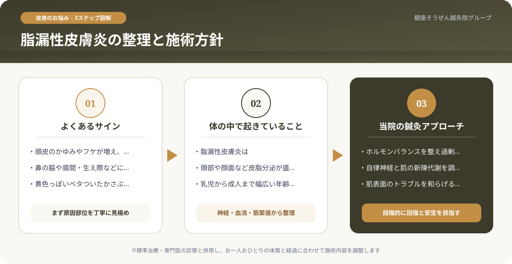

脂漏性皮膚炎の鍼灸
頭皮や顔など皮脂分泌が盛んな部位に、赤み・かゆみ・フケ・皮むけなどを繰り返す慢性的な湿疹です。
まず知っておきたい要点と改善の流れ

脂漏性皮膚炎は、頭部や顔面など皮脂分泌が盛んな部位に発症する湿疹で、乳児から成人まで幅広い年齢層にみられます。皮膚の常在菌であるマラセチアの異常増殖や、自律神経・ホルモンバランスの乱れによる皮脂の過剰分泌、肌質、ストレス、紫外線、食生活の乱れなどが複合的に関与します。医療機関では抗真菌薬やステロイド外用薬、ビタミンB2・B6内服などで治療し、再発予防には生活習慣の見直しが不可欠です。
このようなお悩みはありませんか？
- ✓頭皮のかゆみやフケが増え、洗髪しても改善しにくい
- ✓鼻の脇や眉間・生え際などに赤みやカサカサした皮むけがある
- ✓黄色っぽいベタついたかさぶたができることがある
- ✓ストレスや睡眠不足、季節の変わり目に症状が再発しやすい
当院の施術アプローチ・改善の流れ
なぜ鍼灸で改善へ向かうのか？（作用機序の図解）
脂漏性皮膚炎に対する鍼灸は、神経性炎症・掻痒（かゆみ）伝達と自律神経の鎮静機序を通じて、お体本来の回復力を引き出します。

湿疹・傷口への直接刺激を避け、曲池・血海・築賓・三陰交など全身の調整穴へアプローチします。
痒み感覚を伝える神経経路の過敏性を鎮め、「かゆい→掻く→悪化」の悪循環を断ちます。
交感神経の過緊張や夜間覚醒を和らげ、皮膚の修復が進みやすい血流と睡眠環境を整えます。
標準の保湿・外用・内服治療と協調し、ストレスや季節変化で悪化しにくい土台を支えます。
院長YouTube解説・関連動画
脂漏性皮膚炎の症状は、赤みやかゆみ、皮むけなど
脂漏性皮膚炎の症状は、赤みやかゆみ、皮むけなどです。症状は、顔や頭、わき、陰部、耳の裏などの皮脂の分泌が活発な場所に現れます。
頭皮に炎症が起こった場合は、皮膚が剥がれてフケのようなものが見られるようになります。
症状によっては、顔に現れるアトピー性皮膚炎や接触皮膚炎と似ていることもあり、判別することが難しい場合もあります。
脂漏性皮膚炎（Seborrheic Dermatitis）は、皮膚の炎症性の病気の一つであり、主に頭皮、顔、耳、胸部、背中、腹部などの脂腺の多い部位に発生する症状が特徴的です。この病気は慢性的な経過をたどり、周期的な悪化と緩和を繰り返すことがあります。脂漏性皮膚炎の症状は個人差がありますが、一般的な症状とその特徴について詳しく説明します。
頭皮の症状:
脂漏性皮膚炎は、頭皮の症状が最も一般的であり、特に成人や高齢者に見られることが多いです。頭皮の症状は軽度なフケからひどいフケまで幅広く、ふけだけでなく、頭皮のかゆみや赤み、皮脂の増加が見られることがあります。特に冬季や乾燥した環境では、症状が悪化することがよくあります。フケは白っぽいものから黄色っぽいものまであり、頭皮全体に広がることがあります。
顔の症状:
脂漏性皮膚炎は顔にも多く現れることがあります。特に、鼻の周り、眉毛の間、眉毛の下、耳の後ろ、口の周りなど、皮脂腺が密集している部位に症状が出やすいです。顔の症状は赤みと軽度のふけ、時にはびらんやただれが見られることがあります。症状がひどい場合、顔の皮膚が不快感を伴うほどのかゆみを引き起こすことがあります。
耳の症状:
脂漏性皮膚炎は耳の中や耳の周りにも発生することがあります。耳の中にかさぶたやフケがたまることで、聴覚に影響を及ぼすことがあるため、注意が必要です。耳の後ろにも赤みやかゆみが見られることがあります。
胸部、背中、腹部などの症状:
脂漏性皮膚炎は、胸部、背中、腹部などの体幹部位にも症状が現れることがあります。これらの部位では、赤みとふけが見られることが一般的です。特に乾燥した環境やストレスの増加によって悪化することがあります。
乳児に見られる症状:
脂漏性皮膚炎は乳児にも見られることがあり、特に頭部やおでこ、頬に発症することが多いです。乳児の場合、ふけがよく見られ、黄色っぽいかさぶたが頭皮全体に広がることがあります。一般的に3ヶ月から1歳までの間に発症することが多く、2歳を過ぎると自然に症状が改善する場合があります。
ストレスによる悪化:
脂漏性皮膚炎の症状は、ストレスや心理的な要因によって悪化することがよくあります。ストレスが増加すると自律神経のバランスが崩れ、皮脂の分泌が増加することで症状が悪化することが考えられています。
日光による影響:
脂漏性皮膚炎の症状は、日光によっても影響を受けることがあります。紫外線は皮脂の代謝を促進し、炎症を悪化させる可能性があるため、日光に長時間さらされることは慎重に避ける必要があります。
脂漏性皮膚炎の改善方法は、抗真菌薬やステロイドが含まれた薬を使うことです。薬には、軟膏やクリームタイプ、ローションタイプのものがあります。
頭皮に症状が現れている場合は、軟膏やクリームタイプの薬は塗りにくいため、ローションの薬を使うことをお勧めします。頭皮に薬を塗るときには、髪の根元に塗ることを心がけましょう。
皮脂の分泌を抑えるためにビタミンB2やビタミンB6の飲み薬を使って改善に取り組むこともあります。また、強いかゆみがある場合は、抗ヒスタミン薬の飲み薬を使うこともあります。
脂漏性皮膚炎の改善には、生活習慣を見直すことも非常に大事です。油を多く含む食事を減らすことやきちんとストレスを解消すること、十分な睡眠を摂ることなどを心がけましょう。
生活習慣を見直すことは、脂質性皮膚炎の悪化を防ぐためにも、脂質性皮膚炎の発症を防ぐためにも大事です。
食生活では、ビタミンB類を多く含む牛乳や卵、レバー、しじみ、ほうれん草、トマト、キャベツなどをできるだけ摂取するように心がけ、コーヒーやアルコール、香辛料は摂りすぎないようにしましょう。
脂質性皮膚炎で頭皮に症状が現れている場合はシャンプーが原因となっていることもあります。頭皮の状態には大きな個人差があり、人によって合うシャンプーが違うためです。
自分の頭皮や髪質に合ったシャンプーを選び、シャンプーが原因になっている場合はシャンプーを変えることが大事です。
脂漏性皮膚炎（Seborrheic Dermatitis）の改善法は、症状の軽度から重度に応じて異なります。改善の目的は炎症の抑制、かゆみの軽減、再発予防、生活の質の向上です。
脂漏性皮膚炎の改善には、皮膚の乾燥を改善する保湿が重要です。乾燥した皮膚は炎症を悪化させる要因となるため、保湿剤や保湿クリームを定期的に塗布して皮膚を潤すことが推奨されます。特に入浴後や手を洗った後に保湿を行うことで、水分を閉じ込めることができます。保湿剤にはアロエベラ、ヒアルロン酸、グリセリンなどの成分が含まれているものが効果的です。
トピカルステロイド薬の使用:
脂漏性皮膚炎の炎症やかゆみを抑えるために、トピカルステロイド薬が処方されることがあります。ただし、ステロイド薬は長期間の使用や誤った使用により副作用が生じることがあるため、必ず医師の指導のもとで使用することが重要です。低強度のステロイド薬から始め、症状が軽減された場合は徐々に使用頻度を減らすことが行われます。また、顔やデリケートな部位には、より弱いステロイド薬の使用が推奨されることがあります。
カルシネリン阻害薬の使用:
一部の脂漏性皮膚炎では、カルシネリン阻害薬（タクロリムスやピメクロリムス）が使用されることがあります。これらの薬剤はステロイド薬とは異なる作用機序で炎症を抑えるため、ステロイド薬に対する耐性がある場合や、ステロイド薬による副作用が懸念される場合に選択されることがあります。特に顔やデリケートな部位での使用に適していることが特長です。
アンチファンガル薬の使用:
脂漏性皮膚炎には、Malassezia（マラセチア）菌の増殖が関与していることがあります。この菌に対して有効なアンチファンガル薬（抗真菌薬）が、トピカルまたはオーラル（内服）の形で処方されることがあります。アンチファンガル薬にはケトコナゾール、クロトリマゾール、セレン、亜硫酸塩などが含まれます。薬剤の選択は症状の重症度や個別の要因によって異なります。
ピロクトンオラミンの使用:
ピロクトンオラミンは抗真菌作用だけでなく、炎症を抑える効果もあります。そのため、脂漏性皮膚炎の改善に使用されることがあります。特に頭皮や顔の症状に対して効果的で、継続的な使用が重要です。
抗生物質の使用:
皮膚の感染が疑われる場合には、抗生物質の使用が考慮されることがあります。細菌感染が発症や再発の要因となることがあるため、感染の有無を確認し、必要に応じて抗生物質を処方することが行われます。
抗ヒスタミン薬の使用:
かゆみを緩和するために、抗ヒスタミン薬が使用されることがあります。かゆみによる掻破を防ぐために、かゆみの強い場合には、医師に相談して抗ヒスタミン薬の使用が検討されることがあります。
光線法:
UVB光線法やPUVA法（光線法に光敏剤を併用するもの）は、脂漏性皮膚炎の一部に対して有効とされることがあります。ただし、日光感受性があるため、日焼け止めの使用が必要で、専門的な判断と監視のもとで行われるべきです。
生活習慣の改善:
脂漏性皮膚炎の改善には、健康的な生活習慣の取り入れが重要です。ストレスや不規則な生活は症状を悪化させる要因となるため、ストレス管理や十分な睡眠の確保が必要です。バランスの取れた食事、適度な運動、喫煙や飲酒の過剰摂取を避けることも皮膚の健康に寄与します。
脱脂石鹸の使用:
脂漏性皮膚炎の改善には、脱脂石鹸の使用が推奨されることがあります。通常の石鹸は皮脂を取り除き過ぎる可能性があるため、脂漏性皮膚炎には脱脂石鹸が適しています。皮膚を刺激せずに皮脂を除去し、炎症を抑えます。
皮膚・アレルギー・帯状疱疹・脱毛症の全身ツボ図解
実際の施術ではお一人おひとりの体質・症状に合わせて選穴しますが、アトピー性皮膚炎・慢性蕁麻疹・帯状疱疹痛・円形脱毛症の全身調整の臨床でよく用いられる代表的なツボの目安です。

📌 代表的なツボの詳細一覧表を開く（6穴） ▼
| ツボ名 | 位置の目安 | 主な狙い | セルフケアの注意点 |
|---|---|---|---|
| 百会（ひゃくえ） | 頭頂部の中央 | 頭皮の微小循環（円形脱毛症等）とストレス性のかゆみ鎮静 | 皮膚に炎症や傷がある部位は避けて施術します。 |
| 曲池（きょくち） | 肘を曲げた外側のシワの先端 | アトピー・蕁麻疹のかゆみ（掻痒感）軽減の最重要穴 | 皮膚科の標準外用薬・内服薬と併用して行います。 |
| 合谷（ごうこく） | 手の甲、親指と人差し指の間 | 帯状疱疹痛の鎮痛補助・皮膚バリアの自律神経調整 | 帯状疱疹は発症早期の抗ウイルス薬内服が最優先です。 |
| 血海（けっかい） | 膝のお皿の内上角から指3本分上 | かゆみ・赤み・蕁麻疹の血流バランス調整 | 曲池と組み合わせる「曲池・血海」は皮膚ケアの定番です。 |
| 足三里（あしさんり） | 膝の下外側、指4本分下 | 腸管免疫と皮膚の回復力サポート | 慢性的な皮膚トラブルの体質づくりに用います。 |
| 三陰交（さんいんこう） | 内くるぶしの上から指4本分上 | 夜間のかゆみによる睡眠障害・乾燥肌の巡り改善 | 掻き壊しのある皮膚は避け清潔を保ってケアします。 |
国際査読論文の科学的エビデンス
国際的な医学データベース（PubMed・Cochrane等）で報告されているアトピー性皮膚炎・慢性蕁麻疹・帯状疱疹痛・円形脱毛症の全身調整領域の代表的な査読済み鍼灸研究をまとめています（標準治療との併用や研究上の限界を含めて正確に掲載）。
📚 査読論文データ・PubMed出典リンクを開く（4件） ▼
| 年・研究デザイン | 対象・規模 | 主な結果 | 限界・出典 |
|---|---|---|---|
| 2023年 多施設3群RCT | 慢性特発性蕁麻疹 330名（3大学病院） | 4週時のUAS7変化量は真鍼-8.2 vs シャム-4.1 vs 待機-2.2と統計的有意差を確認。 | 最小臨床的重要差には未達・短期追跡。 Ann Intern Med (PMID: 37956431) |
| 2024年 メタ解析 | アトピー性皮膚炎 8 RCTs（n=463） | SCORAD（MD -10.61, p=0.004）、掻痒VAS（MD -14.71, p<0.00001）、DLQI（p<0.0001）が有意改善。 | EASI・IgEは有意差なし、大規模検証が課題。 BMJ Open (PMID: 39638592) |
| 2021年 シャム対照RCT | 軽〜中等症アトピー性皮膚炎 36名（韓国） | 4週時の総SCORAD変化は真鍼-11.83 vs シャム+0.45（P<0.0001）、終了4週後も持続。 | 単施設・小規模（重症例への外挿は慎重）。 BMC Complement Med Ther (PMID: 33926433) |
| 2023年 メタ解析 | 難治性掻痒（尿毒症性掻痒）7 RCTs（n=504） | 通常治療比で有効率RR 1.28（P=0.003）、透析併用でRR 1.42（P=0.0002）と有意に掻痒軽減。 | 透析患者対象のため一般皮膚疾患への外挿に留意。 J Pain Symptom Manage (PMID: 36055470) |
参考文献・出典
- 2023年 多施設3群RCT（慢性特発性蕁麻疹 330名（3大学病院））— Ann Intern Med (PMID: 37956431)
- 2024年 メタ解析（アトピー性皮膚炎 8 RCTs（n=463））— BMJ Open (PMID: 39638592)
- 2021年 シャム対照RCT（軽〜中等症アトピー性皮膚炎 36名（韓国））— BMC Complement Med Ther (PMID: 33926433)
- 2023年 メタ解析（難治性掻痒（尿毒症性掻痒）7 RCTs（n=504））— J Pain Symptom Manage (PMID: 36055470)
よくある質問（FAQ）
Q. 皮膚科の塗り薬やローションと併用して問題ありませんか？▼
Q. 脂漏性皮膚炎の再発を防ぐために気をつけることは何ですか？▼
あわせて読まれる関連疾患（皮膚のお悩み）
耳下腺手術や外傷の後、食事時に耳の前方や頬に発汗・赤みが出る症状です。専門医のケアと並行し、自律神経バランスを整えます。
顔へのステロイド外用薬などの長期使用により、かゆみや灼熱感のある赤み・ニキビ様のぶつぶつが現れる皮膚炎です。
膝から下や足関節周囲に網状の皮斑と強い痛みを伴う潰瘍を繰り返す難治性疾患です。皮膚科管理と併用し、潰瘍予防と回復を支えます。
花粉が肌に付着することでまぶたや頬、首に乾燥・赤み・かゆみが起きる皮膚炎です。保湿と避粉に加え、4つのツボで体質を整えます。
黄色ブドウ球菌などの細菌感染で皮膚や皮下に膿が溜まる感染症です。抗菌薬や外科処置を最優先に、安定期の体質ケアを支えます。
自己免疫が筋肉や皮膚を攻撃し筋力低下や倦怠感を起こす膠原病（指定難病）です。専門医治療を最優先に、安定期の体調維持を支えます。
CLINICAL RECOVERY CASES
✨ 実際の臨床改善事例・回復経過を見る
銀座本院をはじめ各院での実際の改善事例を症状別に絞り込んでご確認いただけます。
おひとりで悩まず、まずはご相談ください
銀座本院・川口・大宮・横浜・博多・田無の各院でご予約を承っております。